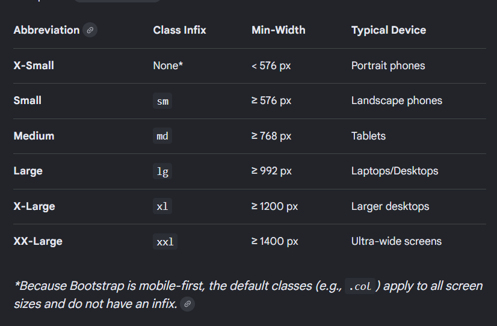

Bootstrap Breakpoints are customizable predefined screen width that dictates how your website's layout and elements adapt to different devices. If you want a grid of columns to stack vertically on a phone but sit side-by-side on tablets and larger screens, you use a breakpoint infix like md. Other options include:
